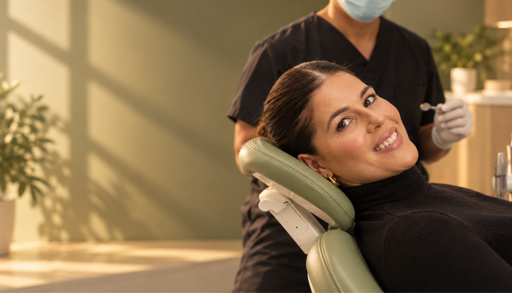
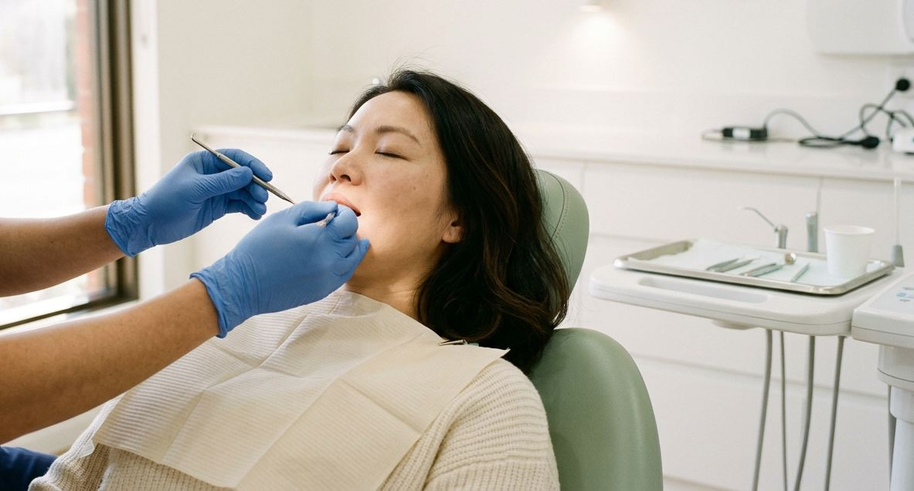
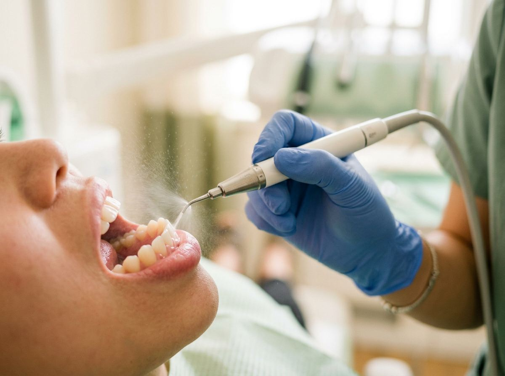
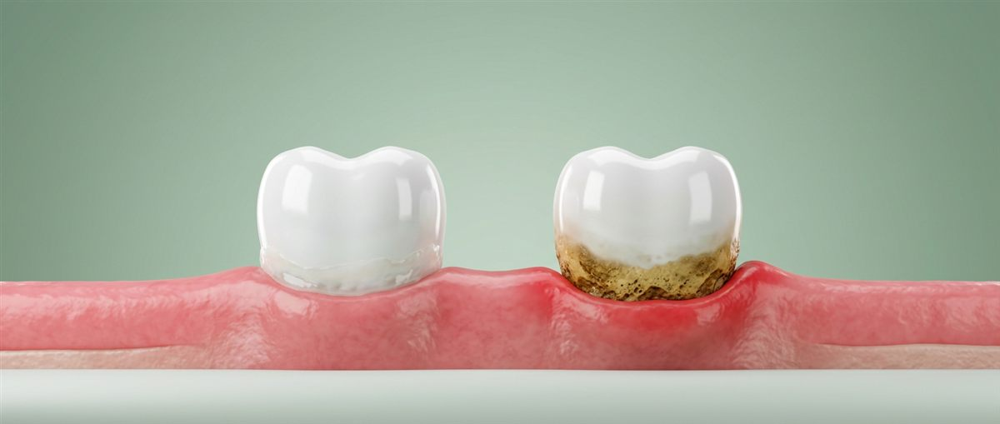
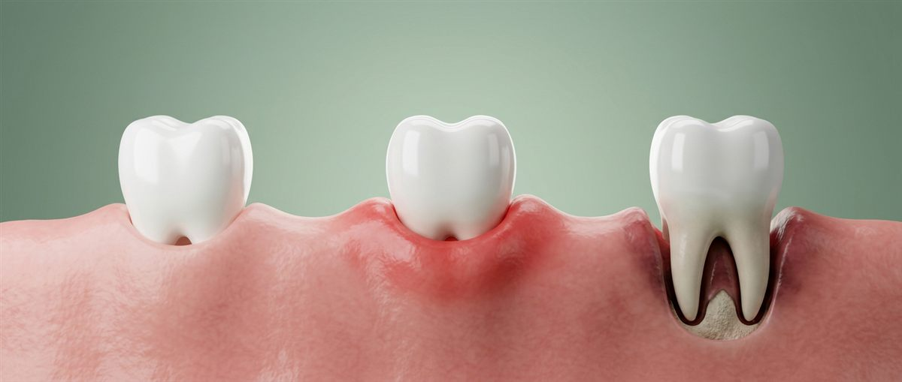
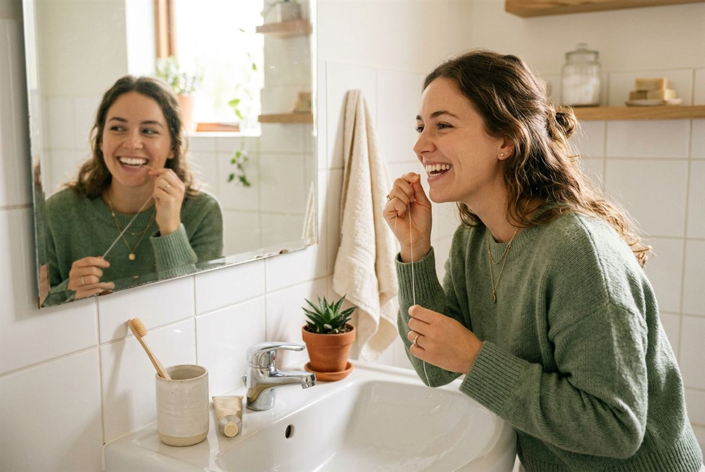

Dental Check
Up and Clean in Pennant Hills
Not sure when you were last seen? Putting it off because you suspect there will be bad news? You are in very normal company, and it is not a conversation we make awkward.
- 13+ yearsCaring for the Hills District
- 5.0 ★From 360+ Google reviews
- 5 dentistsIn one dedicated team
- 30–60 minfor most check up and clean appointments
- All in one visitExam, scale and clean, fluoride, X-rays where due
- Claim on the spotAll health funds accepted, pay only the gap
- Since 2013Family-owned in the Hills District
A dental check up and clean is two things in one appointment.
We look at your teeth, gums and soft tissues to catch anything early, then we remove the hardened build-up that brushing cannot shift. Most people are in and out in under an hour.
Beyond 32 Dental has been looking after families across Pennant Hills and the Hills District since 2013. Whether you come every six months or it has been six years, you will get the same reception.
What happens at a dental check up?
A dental check up is a full examination of your mouth, not just a quick look at your teeth. We are checking several things at once, most of which you cannot see or feel yourself.

- Every tooth surface for decay, including between the teeth where it usually starts
- Existing fillings, crowns and other restorations for cracks, wear or leaking margins
- Gum health, including measuring the depth of the pockets around your teeth
- Your bite and any signs of grinding or clenching
- The soft tissues of your cheeks, tongue, palate and throat, which is an oral cancer screening
- X-rays where they are due, because decay between teeth and bone loss do not show up any other way
At the end we tell you plainly what we found, what needs doing now, what can wait, and what we will simply keep an eye on.
If nothing needs doing, we say that too.
Does a dental check up include a clean?
At our practice, yes.
A standard general dental check up appointment here includes the examination and the scale and clean together.
It is worth asking this elsewhere, because some practices book and charge them separately. If you are comparing appointments between clinics, check whether the clean, the fluoride treatment and any X-rays are included or extra.
How long does a dental check up and clean take?
Usually between thirty and sixty minutes.
If it has been a long time since your last visit and there is significant build-up, the clean takes longer, and occasionally we will split it across two appointments so it can be done thoroughly and comfortably.
What is a scale and clean?
A dental scale and clean is the professional removal of plaque and hardened tartar from your teeth, above and just below the gum line, followed by a polish.


Here is what happens:
- Step1
Assessment
We check where the build-up is and how your gums are responding to it.
- Step2
Scaling
An ultrasonic scaler uses high-frequency vibration and a water spray to break tartar away from the tooth surface. Hand instruments finish the areas the scaler cannot reach neatly.
- Step3
Air polishing, the spa way
What we do differently: we use EMS Airflow, which warms the water so your teeth wonât feel sensitive. Its super-fine powder lifts stain and plaque gently and efficiently. Itâs the closest thing to a dental spa.
- Step4
Fluoride
A fluoride varnish or gel is applied to strengthen the enamel and reduce sensitivity.
- Step5
Advice
We show you the specific spots you are missing at home, which is usually more useful than general advice about brushing.

What is the difference between plaque and tartar?
This is the single most useful thing to understand about professional teeth cleaning, because it explains why the appointment exists at all.
Dental plaque is a soft, sticky film of bacteria that forms on your teeth within hours of brushing. It is soft. You can remove it yourself with a toothbrush and floss, and that is exactly what brushing is for.
Tartar on teeth, also called calculus, is plaque that has been left long enough to absorb minerals from your saliva and harden. It takes as little as a day or two to begin forming. Once it has set, it is bonded to the enamel like limescale to a kettle, and it has a rough surface that collects fresh plaque faster than smooth enamel does.

- Plaque · Soft film, brushes off
- Tartar · Hardened, needs a scale and clean
| Feature | Dental plaque | Tartar on teeth |
|---|---|---|
| Texture | Soft film | Hard, rough deposit |
| Forms | Within hours | Within a day or two |
| Removed by | Brushing and floss | A dentist or hygienist |
Can you remove tartar at home?
No.
It is worth being direct about this, because the internet is full of people claiming otherwise.
Once plaque has mineralised into tartar, no toothbrush, floss, mouthwash, baking soda paste or oil pulling routine will remove it. It is a hard deposit chemically bonded to the tooth. Removing it requires either ultrasonic vibration or a sharp hand instrument used at a specific angle.
Do not attempt it with a metal pick from a chemist or online. We see the results of this. The common outcomes are:
- Scratched enamel that then attracts plaque faster than before
- A lacerated gum
- Tartar pushed further under the gum line, where it does more damage and is harder to reach
What you can do at home is stop new plaque becoming tartar, by brushing twice daily and cleaning between your teeth every day. That is genuinely effective. It just does not touch what is already hardened.
Overdue for a clean?
Book online in under a minute →What is a deep clean, and do I need one?
A deeper clean of the root surfaces, for gum pockets. Most people do not need one.
Read moreShow less
Deep cleaning teeth is a different and more thorough procedure than a routine scale and clean. The clinical terms are periodontal debridement or root planing.
A routine clean deals with build-up on the crowns of the teeth and just under the gum edge. A deep clean goes further down, cleaning the root surfaces inside the pockets that form when gum disease has caused the gum to detach from the tooth. Because it reaches deeper, it is usually done under local anaesthetic and often split across two or more appointments, one section of the mouth at a time.
You need one if we measure pocket depths beyond the normal range and see bone loss on your X-rays. Most people do not need one.
If you do, we will show you the measurements rather than just telling you.
| Feature | Routine clean | Deep clean |
|---|---|---|
| Cleans | Crowns, just under the gum edge | Root surfaces inside gum pockets |
| Numbing | Usually not needed | Usually local anaesthetic |
| Visits | One | Often two or more |
| For | Almost everyone | Deep pockets and bone loss |
6 monthsEvery six months is the standard recommendation in Australia, and it suits most people well.
How often should you go to the dentist?
The more accurate answer is that the right interval depends on your individual risk, and it is something your dentist should assess rather than apply as a blanket rule.
Some people need to come more often, around every three or four months.
That usually applies if you:
- Have a history of gum disease
- Smoke
- Have diabetes, particularly if it is not well controlled
- Have a dry mouth, often from medication
- Are pregnant, because hormonal changes make gums more reactive
- Wear braces or aligners
- Get decay easily despite good brushing

Other people with healthy gums, low decay risk and good home care can safely go longer. Research comparing fixed six-monthly visits with intervals set individually by risk has found little difference in outcomes for adults who attend regularly.
What that research does not tell us is anything about people who stop attending altogether, which is a different situation with a well-established cost.
The practical version: come at the interval we work out together, and do not let a gap turn into a decade.

Been a while? That is fine, and we have heard it all.
Plenty of our patients come back after years away. There is no lecture waiting for you. We take a look, tell you where things stand, and work out a plan you are comfortable with.
What happens when you don’t clean your teeth?
Problems build quietly, and the sequence is well understood.
Within hours
Plaque forms
Bacteria feed on sugars and produce acid, which dissolves enamel and starts a cavity.
Within days
Plaque hardens into tartar
The rough surface collects more plaque, and the process accelerates.
Weeks to months
Gums become inflamed
Bacteria at the gum line cause gingivitis. Gums look red and puffy and bleed when you brush. This stage is fully reversible with a professional clean and good home care.
ReversibleMonths to years
Inflammation moves deeper
Untreated gingivitis can progress to periodontitis, where the infection reaches the bone holding the teeth. Pockets form, the bone recedes, and teeth eventually loosen. This stage is not reversible. It can be stabilised and managed, but the lost bone does not come back.
Not reversibleEventually
Decay reaches the nerve
A cavity left long enough reaches the pulp, at which point a filling is no longer enough and you are looking at root canal treatment or losing the tooth.
None of this is said to frighten you.
The point is that every stage above is cheaper, quicker and more comfortable to deal with than the one after it, and a routine appointment is where it gets caught.
What is gum disease?
Gum disease is infection and inflammation of the tissues holding your teeth in place, caused by bacteria in plaque and tartar at and below the gum line.

- Healthy · Firm, pink, no bleeding
- Gingivitis · Inflamed, still reversible
- Periodontitis · Bone loss, can be managed
Gingivitis Reversible
The early stage, gingivitis, shows as red, swollen gums that bleed when you brush or floss. Bleeding gums are not normal and are not a sign you are brushing too hard. They are a sign of inflammation, and they are reversible.
Periodontitis Not reversible
The advanced stage, periodontitis, involves loss of the bone supporting the teeth. Signs include gums pulling back from the teeth, persistent bad breath, a bad taste, gaps opening between teeth, and teeth that feel loose.
Gum disease is the leading cause of tooth loss in Australian adults.
It is largely painless until it is advanced, which is precisely why it is missed.

Does teeth cleaning hurt?
For most people, no. A routine clean feels like vibration, scraping and cold water.
It is not usually painful, though it can be uncomfortable if your gums are already inflamed or if there is a lot of build-up to remove.
Tell us if you are sensitive. We can go more slowly, use topical numbing gel, or numb the area properly. We also have happy gas and in-house sedation for patients who find dental appointments genuinely stressful, and a check up and clean is a perfectly reasonable thing to use them for.
How long after teeth cleaning can I eat?
Why are my teeth sensitive after a dental cleaning?
Sensitive teeth after dental cleaning is common and almost always temporary. There are three usual reasons.
- Tartar had been insulating exposed root surfaces, and removing it leaves them briefly exposed to temperature until they settle.
- Inflamed gums that have been cleaned are tender for a few days as the inflammation resolves.
- Where gums have receded, the root surface underneath has no enamel on it and is naturally more sensitive.
It typically settles within a few days to two weeks. A sensitivity toothpaste used consistently, avoiding very hot and very cold food for a few days, and brushing gently with a soft brush all help. If it is still bothering you after a couple of weeks, come back and let us look, because persistent sensitivity in one specific tooth can mean something else.
What does a check up and clean cost?
We will tell you the fee before your appointment, and there are no surprises added afterwards.
Because there is no pricing on this page, the useful thing to know is what should be included and how your health fund fits in.
What should be included?
- The examination, including the oral cancer screening
- The scale and clean
- Fluoride treatment
- X-rays, where they are due
- A written treatment plan if anything needs doing
When you are comparing the dental check up and clean cost between practices, the differences usually come down to whether X-rays and fluoride are bundled in or added on. Ask for the total including those, not the headline figure.
Does private health insurance cover it?
Check ups and cleans sit under general dental in extras cover rather than major dental, so most extras policies contribute, and many cover preventive appointments in full up to a set number per year. Waiting periods on general dental are typically much shorter than on major items.
We accept all health funds and claim on the spot, so you only pay any gap on the day.
Worth knowing: most policies reset their limits on 1 January, and any unused preventive cover does not roll over.
Is there help for children?
The Child Dental Benefits Schedule is a Medicare programme providing a capped benefit for basic dental services, including check ups, cleans, X-rays and fillings, for eligible children aged 0 to 17. The cap applies across two consecutive calendar years and is indexed each January.
To be eligible, your child needs to be enrolled in Medicare and your family needs to receive a qualifying government payment, such as Family Tax Benefit Part A, for at least part of the calendar year. It does not cover orthodontic or cosmetic work. Eligibility is reassessed annually, so check your status on myGov or with Services Australia.
Looking after your teeth between visits
A dentist teeth cleaning appointment resets things. What happens in the six months afterwards is down to you, and it is mostly about consistency rather than effort.

With fluoride toothpaste. Angle the bristles at forty-five degrees toward the gum line, which is where plaque actually sits, and use small circles rather than a scrubbing motion.
Floss, interdental brushes or a water flosser, whichever you will actually use. Brushing alone misses the surfaces between teeth, which is where most decay and gum disease begins.
After brushing, spit out the toothpaste and leave it. Rinsing with water washes away the fluoride before it has done anything.
Hard bristles and heavy pressure wear enamel and cause gums to recede. Neither grows back.
Sipping a soft drink across an afternoon does more damage than drinking it in five minutes, because each sip restarts the acid attack.
A night guard is a small thing that prevents a lot of expensive damage.
 deep-cleaning-teeth-before-after.webpAlt: Deep cleaning teeth before and after at Beyond 32 Dental Pennant Hills
deep-cleaning-teeth-before-after.webpAlt: Deep cleaning teeth before and after at Beyond 32 Dental Pennant HillsSee the results
Deep cleaning teeth before and after images show the difference most clearly at the gum line, where tartar build-up and the staining around it is removed and the gum tissue returns to a healthy colour over the following weeks.
Patient images are published with consent and are intended for educational purposes only. Results vary between individuals, and all dental procedures carry risks.
Book your appointmentTeeth cleaning near Pennant Hills
Beyond 32 Dental is at 1st Floor, 114 Yarrara Rd, Pennant Hills, a short walk from Pennant Hills station with parking on site. If you are looking for teeth cleaning in this part of Sydney, we see patients from Cherrybrook, West Pennant Hills, Thornleigh, Beecroft, Castle Hill, Glenhaven, Dural, Westleigh and across the Hills District.
- Dr Jeff Lin and Dr Jennifer Chung, who founded the practice in 2013 and each have sixteen years of experience
- Examination, clean, fluoride and X-rays where due, in one appointment
- Happy gas, in-house sedation and a comfort menu for anxious patients
- All health funds accepted with on the spot claiming
- Saturday appointments, and we see whole families in consecutive slots
- No judgement about how long it has been

Frequently asked questions
Still unsure about something? Call us on (02) 9158 6334 and ask.
What happens at a dental check up and clean?
We examine every tooth for decay, check your existing fillings and crowns, measure your gum health, screen the soft tissues for oral cancer, and take X-rays where due. Then we scale away tartar, polish the teeth and apply fluoride. Most appointments take thirty to sixty minutes.
How often should you go to the dentist?
Six months suits most people, but the right interval depends on your risk. People with gum disease, diabetes, dry mouth, braces or a smoking history often need three or four monthly visits. Others with healthy gums can safely go longer.
Can you remove tartar at home?
No. Once plaque hardens into tartar it bonds to the enamel and cannot be brushed, flossed or rinsed off. It needs an ultrasonic scaler or hand instruments. Do not use a metal pick at home, as it scratches enamel and injures gums.
What is the difference between plaque and tartar?
Plaque is a soft bacterial film that forms within hours and is removable by brushing. Tartar is plaque that has hardened by absorbing minerals from saliva, and only a dentist or hygienist can remove it.
Does teeth cleaning hurt?
For most people it is not painful, though it can be uncomfortable if your gums are inflamed or there is heavy build-up. Numbing gel, local anaesthetic, happy gas and sedation are all available if you need them.
Why are my teeth sensitive after a dental cleaning?
Usually because tartar was insulating exposed root surfaces, or because inflamed gums are tender after cleaning. It normally settles within a few days to two weeks. Sensitivity toothpaste helps.
How long after teeth cleaning can I eat?
Straight away after a routine clean. If fluoride was applied, wait about thirty minutes and avoid hot drinks and hard food for the rest of the day.
Does a dental check up include a clean?
At our practice, yes. Some clinics book and charge them separately, so it is worth asking when comparing appointments.
Any surgical or invasive procedure carries risks. Before proceeding, you should seek a professional opinion from a qualified dental practitioner.